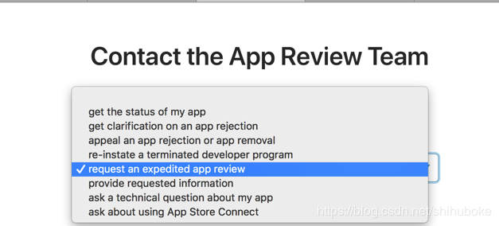
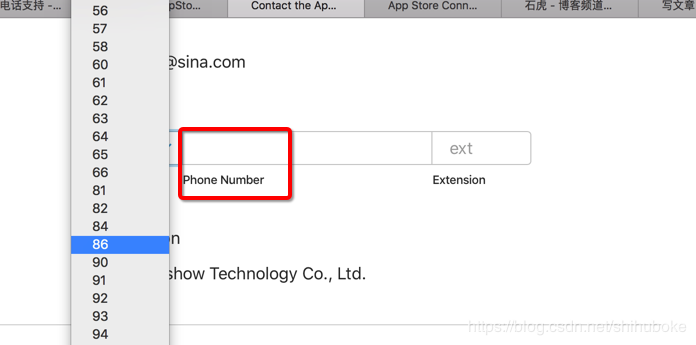
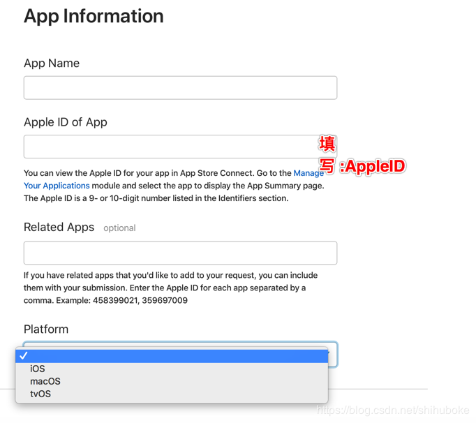
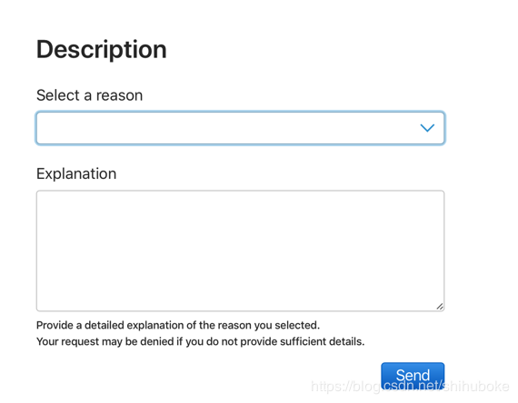

1.直接提交申诉理由 (里面还有一起其他功能 如申请加急审核等.)
https://developer.apple.com/contact/app-store/?topic=appeal2.开发问题, 貌似也可以问一些审核问题
https://developer.apple.com/contact/submit.PHP3.苹果相关地区联系电话 ,中国区的为 4006 701 855
貌似审核周末继续 电话客户周末不上班
01085255770 苹果审核团队的电话
https://developer.apple.com/contact/phone.php4.各地区 Apple 开发者支持电话号码:https://developer.apple.com/cn/contact/phone.php
太平洋标准时间上午11点–晚上8点之间通过美国审核电话001 408 7830508
注意: 如果是座机要在前面多加一个0.
提交审核后进去下面链接申请加急审核
链接：https://developer.apple.com/appstore/contact/appreviewteam/index.html
在I would like to选择加急审核(默认选项)图1:选择原因 
图2:填写联系方式 
图3:填写 APP 信息 
图4:备注内容 
注意: ⚠️这里可以填写中文，据说最好用英文，不过我自己写的是中文。
另外要注意的是理由一般是用户安全问题或者崩溃问题成功率会高一些
还有一点要注意的是，如果是崩溃问题，你最好写上操作步骤，让审核员去重现这个问题。